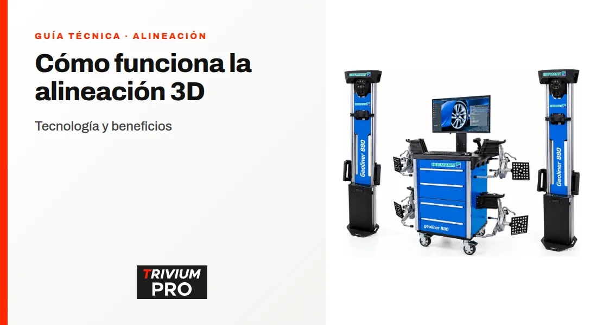

La alineación de dirección es un procedimiento clave en el mantenimiento vehicular, asegurando estabilidad, confort y menor desgaste de los neumáticos. En los últimos años, la tecnología de alineación 3D ha revolucionado la industria automotriz en Argentina, permitiendo ajustes precisos y rápidos.
¿Qué es la alineación 3D?
La alineación 3D es un sistema avanzado que utiliza cámaras de alta definición y software especializado para medir y corregir los ángulos de las ruedas con gran precisión. A diferencia de los métodos tradicionales que dependen de láseres o escuadras manuales, el sistema 3D genera un modelo tridimensional del vehículo en tiempo real, permitiendo ajustes exactos según las especificaciones del fabricante.
¿Cómo funciona el proceso de alineación 3D?
- Colocación de objetivos reflejantes: Se instalan dispositivos reflectantes en las ruedas del auto. Estos objetivos no tienen componentes electrónicos y simplemente reflejan la información hacia las cámaras.
- Captura de datos: Cámaras de alta resolución analizan la posición y ángulos de las ruedas en relación al vehículo. La información se envía a un software que genera un modelo 3D.
- Análisis y diagnóstico: El sistema compara las medidas actuales con los valores recomendados por el fabricante del auto y detecta desviaciones en ángulos como cámber, cáster y convergencia.
- Corrección de la alineación: Un técnico realiza los ajustes necesarios sobre los componentes de la suspensión y dirección del auto para devolverlo a sus parámetros óptimos.
- Verificación final: Se realiza una última lectura para confirmar que la alineación esté dentro de los valores ideales.
Beneficios de la alineación 3D
- Mayor precisión: El análisis tridimensional permite ajustes exactos, reduciendo el margen de error humano.
- Proceso rápido y eficiente: La lectura y ajuste toman menos tiempo en comparación con los sistemas tradicionales.
- Menor desgaste de neumáticos: Un auto bien alineado reduce el desgaste irregular de las cubiertas y prolonga su vida útil.
- Mejor maniobrabilidad y seguridad: Un vehículo alineado responde mejor en curvas y frenadas, mejorando la estabilidad y reduciendo riesgos de accidentes.
- Reducción del consumo de combustible: Al minimizar la resistencia de rodamiento, el motor trabaja de manera más eficiente, ahorrando combustible.
Conclusión
La alineación 3D es hoy una de las tecnologías más avanzadas en el mantenimiento automotriz, permitiendo una mayor precisión y rapidez en el servicio. En Argentina, cada vez más talleres y concesionarias adoptan este sistema para ofrecer a sus clientes un mejor rendimiento y seguridad en sus vehículos. Si notás que tu auto tira hacia un lado, desgasta los neumáticos de forma desigual o el volante está descentrado, es hora de realizar una alineación 3D y disfrutar de sus beneficios.